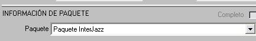
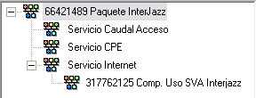
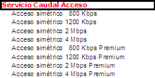
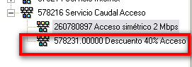
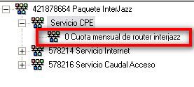
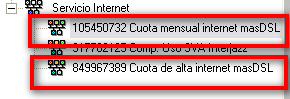
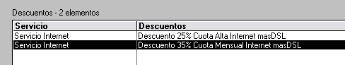
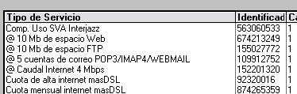
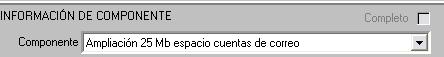
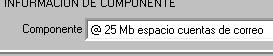

Servicio MASdsl
El servicio masDSL es un servicio de datos
Dentro de Vantive lo identificamos como PAQUETE INTERJAZZ

El alta de este paquete genera de forma automática:
1 Servicio Caudal Acceso
2 Servicio CPE
3 Servicio Internet

1-SERVICIO CAUDAL ACCESO
Debe tener el caudal contratado por el cliente

Puede
tener algún descuento sobre la cuota del caudal.

2
SERVICIO CPE
Es el equipo instalado en el cliente.
De este servicio cuelga una cuota mensual, cuyo importe es variable, es decir, viene firmado en contrato.
En caso de que su coste sea cero lo veríamos de la siguiente forma

. SERVICIO INTERNET
3.1 Debe tener una cuota de alta y una cuota mensual.

Los
precios no son variables, es decir, no tengo que introducir el
importe de forma manual, por lo que en casi todos los casos
aparecerán descuentos sobre estas cuotas

3.2
Además de los siguientes componentes, :
@ 10 Mb de espacio FTP; @ 10 Mb de espacio Web; @ 5 cuentas de correo POP3/IMAP4/WEBMAIL; @ Caudal Internet XXX Kbps.
Estos son los componentes obligatorios que nos encontraríamos dentro del servicio de Intenet del Paquete Interjazz (masdsl)

3.3
EXCEPCION: masDSL 256
No tiene servicio acceso caudal, y cuando aparece en Vantive debe estar cancelado.
Debe tener un descuento del 100% de su cuota mensual
El componente: @ Caudal Internet XXX Kbps debe aparecer sin @, es decir: Caudal Internet 256 Kbps.
De esta forma se facturará la cuota de 48 euros del caudal del masdsl 256
El masdsl 400, masdsl 800, masdsl 1200, masdsl 4 mbps mantienen la misma estructura
3.5 Además, de los componentes descritos en la diapositiva anterior, el cliente siempre puede pedir ampliaciones de sus cuentas de correo, espacio FTP, espacio WEB...
Las ampliaciones no deben llevar el símbolo “ @ “ puesto que esto implicaría que no se facturan al cliente, es decir, si el cliente solicita una ampliación del espacio de sus cuentas de correo deberemos seleccionar el componente “Ampliacion 25mb espacio cuentas de correo” y no “@ 25 mb espacio cuentas de correo”


3.6
MASDSL Y MASDSL PREMIUM
La diferencia, la encontramos en el caudal asegurado.
MASDSL: aseguramos el 25% del caudal contratado
MASDSL PREMIUM: aseguramos el 50% del caudal contratado.